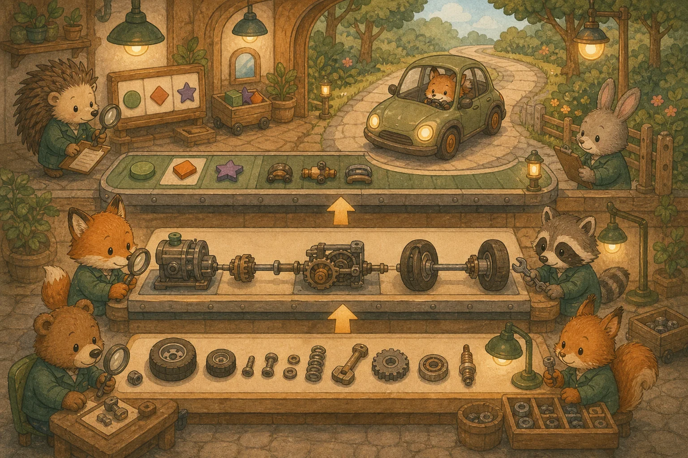

부록 A. 실무 JUnit 5 & RTL 테스트 검증론
실무 채용 시장에서 가장 선호하는 백엔드 Java/Spring 테스트(JUnit 5, Mockito, MockMvc, @DataJpaTest) 및 프론트엔드 React Testing Library(RTL) 테스트 코드를 총 12개 섹션으로 완벽히 정복합니다.
📐 A. 테스트 기초 원칙
1. 테스트 피라미드와 테스트를 작성해야 하는 이유
💡 비유로 이해하기: 자동차 출고 검사 라인
단위 테스트(Unit)는 엔진, 타이어, 브레이크 부품 하나하나를 개별 검사하는 것입니다. 가장 빠르고 정확합니다.
통합 테스트(Integration)는 엔진+변속기+바퀴를 조립한 뒤 서로 맞물려 돌아가는지 확인합니다.
E2E 테스트는 완성된 자동차를 실제 도로에서 시운전하는 것입니다. 가장 느리고 비싸지만 사용자 관점에서 확실합니다.

🧱 단위 테스트 (70%)
서비스 클래스 1개의 메서드 로직만 격리 검증. 외부 의존성은 Mock으로 대체. 가장 많이, 가장 빠르게.
🔗 통합 테스트 (20%)
Controller → Service → Repository가 실제로 연결되어 동작하는지 검증. DB, Spring Context 실제 로드.
🌐 E2E 테스트 (10%)
실제 브라우저에서 사용자 시나리오를 자동 재현. Playwright/Cypress 사용. 가장 느리고 비싸므로 핵심 플로우만.
테스트 작성 원칙 — Given / When / Then (AAA 패턴):
① Given (준비) — 테스트에 필요한 데이터와 상태를 세팅 →
② When (실행) — 테스트 대상 메서드를 호출 →
③ Then (검증) — 결과가 기대값과 일치하는지 assert
좋은 테스트 이름 짓기: 한글 메서드명을 적극 활용합니다. 주문_총결제액_계산_단위테스트(), 존재하지_않는_상품_조회_시_예외_발생()처럼 무엇을_하면_어떤_결과 형태가 가장 직관적입니다.
☕ B. 백엔드 단위 테스트 (JUnit 5 + Mockito)
2. JUnit 5 & AssertJ — 단위 테스트의 기초 체력
단위 테스트(Unit Test)는 외부 환경(DB, 네트워크)과 독립적으로, 클래스 하나의 메서드 로직이 무결한지 초고속 검증합니다.
import org.junit.jupiter.api.Test;
import org.junit.jupiter.api.DisplayName;
import org.junit.jupiter.api.BeforeEach;
import static org.assertj.core.api.Assertions.*;
class OrderTest {
private Order order;
@BeforeEach // 매 테스트 실행 전 초기화
void setUp() {
OrderItem item1 = new OrderItem(1L, "오버핏 셔츠", 2, 49000);
OrderItem item2 = new OrderItem(3L, "와이드 슬랙스", 1, 59000);
order = new Order(1001L, List.of(item1, item2));
}
@Test
@DisplayName("주문 총결제액이 정확히 계산되는지 검증")
void 주문_총결제액_계산_단위테스트() {
// When
int totalPayment = order.calculateTotalPrice();
// Then — AssertJ 체이닝으로 가독성 높은 검증
assertThat(totalPayment)
.isNotNull()
.isEqualTo(157_000); // 49000×2 + 59000 = 157,000원
}
@Test
@DisplayName("빈 주문 시 총액은 0원")
void 빈_주문_총결제액_0원() {
Order emptyOrder = new Order(1002L, List.of());
assertThat(emptyOrder.calculateTotalPrice()).isZero();
}
}JUnit 5 핵심 어노테이션:
3. @ParameterizedTest — 여러 입력값 한 번에 테스트
같은 로직을 여러 경우의 수로 검증할 때, 테스트 메서드를 복붙하는 대신 파라미터만 바꿔서 반복 실행합니다.
import org.junit.jupiter.params.ParameterizedTest;
import org.junit.jupiter.params.provider.CsvSource;
class DiscountTest {
@ParameterizedTest(name = "등급 {0}: {1}원 → 할인 후 {2}원")
@CsvSource({
"BRONZE, 100000, 95000", // 5% 할인
"SILVER, 100000, 90000", // 10% 할인
"GOLD, 100000, 80000" // 20% 할인
})
void 등급별_할인_정책_검증(String grade, int original, int expected) {
DiscountPolicy policy = new DiscountPolicy(Grade.valueOf(grade));
assertThat(policy.apply(original)).isEqualTo(expected);
}
}4. 예외 테스트 — assertThrows & assertThatThrownBy
"존재하지 않는 상품을 조회하면 예외가 발생해야 한다"처럼, 예외가 정상적으로 터지는지 검증하는 것도 중요한 테스트입니다.
// 스타일 1: JUnit 5 — assertThrows
@Test
void 존재하지_않는_상품_조회_시_예외_발생() {
ProductNotFoundException ex = assertThrows(
ProductNotFoundException.class,
() -> productService.findById(999L)
);
assertThat(ex.getMessage()).contains("999");
}
// 스타일 2: AssertJ — assertThatThrownBy (더 가독성 좋음!)
@Test
void 재고_부족_시_주문_실패_예외() {
assertThatThrownBy(() -> orderService.placeOrder(outOfStockItem))
.isInstanceOf(InsufficientStockException.class)
.hasMessageContaining("재고 부족")
.hasFieldOrPropertyWithValue("productId", 42L);
}5. Mockito — 가짜 객체로 서비스 로직 격리 테스트
DB에 실제로 연결하지 않고, 가짜 Repository(Mock)를 주입하여 서비스 클래스의 비즈니스 로직만 독립적으로 검증합니다.
💡 비유로 이해하기: 드라마 촬영의 대역 배우
주연 배우(Service)의 연기력을 테스트하고 싶은데, 매번 실제 세트(DB)를 짓기는 비용이 큽니다. 그래서 대역 배우(Mock)를 세워 "이 대사가 나오면 이렇게 반응해"라고 미리 약속(Stubbing)해 두고 촬영합니다. 촬영 후에는 "대역이 정말 호출되었는지" 출석 체크(verify)도 합니다.
@ExtendWith(MockitoExtension.class)
class ProductServiceTest {
@Mock // 가짜 DB 인터페이스
private ProductRepository productRepository;
@InjectMocks // Mock을 자동 주입받는 테스트 대상
private ProductService productService;
@Test
void 상품_조회_비즈니스_로직_Mockito_테스트() {
// Given: 가짜 시나리오(Stubbing) 주입
Product fakeProduct = new Product(1L, "피그먼트 스웨트", "tops", 65000);
BDDMockito.given(productRepository.findById(1L))
.willReturn(Optional.of(fakeProduct));
// When: Mock이 주입된 서비스 실행
ProductResponse response = productService.getProductDetails(1L);
// Then: 결과 검증
assertThat(response.name()).isEqualTo("피그먼트 스웨트");
assertThat(response.price()).isEqualTo(65000);
// Verify: Repository가 정확히 1번 호출되었는지 확인
Mockito.verify(productRepository, Mockito.times(1)).findById(1L);
// 더 이상 호출되지 않았는지 확인
Mockito.verifyNoMoreInteractions(productRepository);
}
}⚠️ @Mock vs @MockitoBean — 절대 헷갈리지 말 것!
@MockBean/@SpyBean은 Spring Boot 3.4부터 deprecated되었고, Spring Framework 6.2의 @MockitoBean/@MockitoSpyBean(org.springframework.test.context.bean.override.mockito)으로 대체됩니다. 본 코스는 Boot 3.4+ 기준이라 @MockitoBean을 씁니다. (레거시 프로젝트에선 아직 @MockBean이 보일 수 있습니다.)
🌿 C. Spring Boot 슬라이스 테스트
6. @WebMvcTest + MockMvc — API 엔드포인트 테스트
Controller 레이어만 가볍게 띄워서 HTTP 요청/응답, URL 매핑, 유효성 검증, Security 필터를 테스트합니다. Service는 @MockitoBean으로 대체합니다.
💡 비유로 이해하기: 레스토랑의 웨이터만 테스트
레스토랑 전체(통합 테스트)가 아닌, 웨이터(Controller)만 테스트합니다. 주방장(Service)은 대역(MockitoBean)을 세우고, 웨이터가 주문(Request)을 제대로 받고 음식(Response)을 올바른 테이블에 전달하는지만 확인합니다.
@WebMvcTest(ProductController.class) // Controller만 로드!
class ProductControllerTest {
@Autowired
private MockMvc mockMvc; // 가상 HTTP 클라이언트
@MockitoBean // Spring Context의 빈을 Mock으로 교체 (Boot 3.4+; 구 @MockBean)
private ProductService productService;
@Test
@DisplayName("GET /api/products/1 → 200 OK + 상품 JSON 반환")
void 상품_단건_조회_API_테스트() throws Exception {
// Given
ProductResponse response = new ProductResponse(1L, "셔츠", 49000);
BDDMockito.given(productService.getProductDetails(1L))
.willReturn(response);
// When & Then
mockMvc.perform(get("/api/products/1")
.contentType(MediaType.APPLICATION_JSON))
.andExpect(status().isOk()) // HTTP 200
.andExpect(jsonPath("$.name").value("셔츠")) // JSON 필드 검증
.andExpect(jsonPath("$.price").value(49000))
.andDo(print()); // 요청/응답 전체 로그 출력
}
@Test
@DisplayName("POST /api/products — 유효성 실패 시 400 Bad Request")
void 상품_등록_유효성_실패_400() throws Exception {
String invalidJson = """
{"name": "", "price": -1}
""";
mockMvc.perform(post("/api/products")
.contentType(MediaType.APPLICATION_JSON)
.content(invalidJson))
.andExpect(status().isBadRequest()); // HTTP 400
}
}7. @DataJpaTest — JPA Repository 쿼리 검증
Service, Controller는 배제하고, @Entity + Repository + 임베디드 H2 DB만 가볍게 띄워서 JPQL, 쿼리 메서드, Fetch Join 등의 SQL 정확성을 검증합니다.
@DataJpaTest // JPA 관련 빈만 로드 + 임베디드 H2 DB 자동 세팅
@AutoConfigureTestDatabase(replace = Replace.NONE) // 실제 DB 사용 시
class ProductRepositoryTest {
@Autowired
private ProductRepository productRepository;
@Autowired
private TestEntityManager em; // 테스트용 EntityManager
@Test
@DisplayName("카테고리별 상품 조회 쿼리 검증")
void 카테고리별_상품_조회() {
// Given: 테스트 데이터 삽입
em.persist(new Product(null, "린넨 셔츠", "tops", 45000));
em.persist(new Product(null, "데님 팬츠", "bottoms", 69000));
em.persist(new Product(null, "오버핏 티셔츠", "tops", 35000));
em.flush(); // DB에 반영
em.clear(); // 1차 캐시 클리어 (실제 쿼리 발생 확인)
// When
List<Product> tops = productRepository.findByCategory("tops");
// Then
assertThat(tops).hasSize(2);
assertThat(tops).extracting("name")
.containsExactlyInAnyOrder("린넨 셔츠", "오버핏 티셔츠");
}
@Test
@DisplayName("가격 범위 검색 쿼리 동작 검증")
void 가격_범위_검색() {
em.persist(new Product(null, "A", "tops", 30000));
em.persist(new Product(null, "B", "tops", 50000));
em.persist(new Product(null, "C", "tops", 80000));
em.flush();
List<Product> result = productRepository
.findByPriceBetween(40000, 90000);
assertThat(result).hasSize(2);
}
}8. @SpringBootTest — 전체 통합 테스트
모든 Spring Bean, DB, Security까지 실제 서버처럼 완전히 띄워서 전체 요청 흐름을 검증합니다. 무겁지만 가장 확실한 테스트입니다.
@SpringBootTest(webEnvironment = SpringBootTest.WebEnvironment.RANDOM_PORT)
@Transactional // 테스트 후 자동 롤백!
class OrderIntegrationTest {
@Autowired
private TestRestTemplate restTemplate; // 실제 HTTP 호출
@Test
@DisplayName("주문 생성 → 조회 전체 흐름 통합 테스트")
void 주문_생성_조회_통합_테스트() {
// Given: 주문 요청 DTO
OrderRequest request = new OrderRequest(1L, 2);
// When: 실제 POST 요청
ResponseEntity<OrderResponse> createResponse = restTemplate
.postForEntity("/api/orders", request, OrderResponse.class);
// Then: 생성 확인
assertThat(createResponse.getStatusCode()).isEqualTo(HttpStatus.CREATED);
Long orderId = createResponse.getBody().id();
// When: 생성된 주문 조회
ResponseEntity<OrderResponse> getResponse = restTemplate
.getForEntity("/api/orders/" + orderId, OrderResponse.class);
// Then: 조회 확인
assertThat(getResponse.getBody().quantity()).isEqualTo(2);
}
}📊 Spring Boot 테스트 전략 비교 총정리
⚛️ D. 프론트엔드 테스트 (Vitest + RTL)
9. Vitest + React Testing Library — 컴포넌트 행위 검증
Vite/Next.js 프로젝트에서는 Jest 대신 Vitest가 네이티브 호환성이 가장 좋습니다. React Testing Library(RTL)는 사용자 입장에서 컴포넌트를 테스트합니다 — DOM 구조가 아닌 "화면에 무엇이 보이는지, 클릭하면 어떻게 변하는지"를 검증합니다.
import { render, screen, fireEvent } from "@testing-library/react";
import { describe, test, expect, vi } from "vitest";
import AddToCartButton from "./AddToCartButton";
describe("AddToCartButton 컴포넌트", () => {
test("최초 렌더링 시 '장바구니에 옷 담기' 텍스트 표시", () => {
render(RTL 핵심 쿼리 우선순위 (접근성 기반):
10. 비동기 테스트 — waitFor & findBy
API 호출 후 데이터가 화면에 나타나기까지 시간이 걸리는 경우, waitFor나 findBy로 비동기 렌더링을 기다렸다가 검증합니다.
import { render, screen, waitFor } from "@testing-library/react";
test("API에서 상품 목록을 불러와 렌더링", async () => {
render(11. MSW (Mock Service Worker) — API 모킹
프론트엔드 테스트에서 백엔드 API 없이도 HTTP 요청을 가로채 가짜 응답을 반환합니다. 네트워크 레벨에서 동작하므로 fetch/axios 등 어떤 HTTP 클라이언트든 투명하게 모킹됩니다.
// 1. MSW 핸들러 정의 (src/mocks/handlers.ts)
import { http, HttpResponse } from "msw";
export const handlers = [
http.get("/api/products", () => {
return HttpResponse.json([
{ id: 1, name: "오버핏 셔츠", price: 49000 },
{ id: 2, name: "와이드 팬츠", price: 59000 },
]);
}),
http.post("/api/orders", async ({ request }) => {
const body = await request.json();
return HttpResponse.json({ id: 1001, ...body }, { status: 201 });
}),
];
// 2. 테스트에서 MSW 서버 설정
import { setupServer } from "msw/node";
import { handlers } from "./mocks/handlers";
const server = setupServer(...handlers);
beforeAll(() => server.listen()); // 테스트 시작 전 서버 ON
afterEach(() => server.resetHandlers()); // 매 테스트 후 핸들러 초기화
afterAll(() => server.close()); // 전체 종료
test("MSW 모킹된 API에서 상품 목록을 가져옴", async () => {
render(🌐 E. E2E 테스트 & 커버리지
12. E2E 테스트 (Playwright) & 테스트 커버리지
Playwright는 실제 브라우저(Chromium, Firefox, WebKit)를 자동 조작하여 사용자 시나리오를 재현합니다. 가장 느리고 비싸지만 핵심 사용자 플로우(로그인 → 상품 검색 → 장바구니 → 결제)를 보장합니다.
// e2e/shopping-flow.spec.ts (Playwright)
import { test, expect } from "@playwright/test";
test("사용자가 상품을 검색하고 장바구니에 담는 전체 플로우", async ({ page }) => {
// 1. 메인 페이지 접속
await page.goto("http://localhost:3000");
// 2. 상품 검색
await page.fill('[placeholder="상품 검색"]', "셔츠");
await page.click('button:has-text("검색")');
// 3. 검색 결과 확인
await expect(page.locator(".product-card")).toHaveCount(3);
// 4. 첫 번째 상품 클릭
await page.click(".product-card >> nth=0");
await expect(page).toHaveURL(/\/products\/\d+/);
// 5. 장바구니 담기
await page.click('button:has-text("장바구니에 담기")');
// 6. 장바구니 페이지 이동 & 확인
await page.click('a:has-text("장바구니")');
await expect(page.locator(".cart-item")).toHaveCount(1);
});테스트 커버리지 도구:
☕ 백엔드: JaCoCo
Gradle: jacocoTestReport 태스크로 HTML 리포트 생성.
실무 커버리지 목표: Line 80%+, Branch 70%+.
100%를 목표로 하면 오히려 무의미한 테스트가 늘어나므로 주의!
⚛️ 프론트엔드: c8 / Istanbul
Vitest: vitest --coverage로 자동 커버리지 측정.
c8은 V8 엔진 네이티브 커버리지로 가장 빠름.
Istanbul은 더 세밀한 분석 가능.
TDD (Test-Driven Development) 사이클:
① RED 실패하는 테스트 먼저 작성 →
② GREEN 테스트를 통과하는 최소 코드 작성 →
③ REFACTOR 코드를 깔끔하게 리팩토링 → 반복 🔄
🛠️ 직접 만들어보기 — "이걸로 만들 수 있나?" 체크포인트
읽기만으로는 복귀가 안 됩니다. 앞 챕터에서 만든 코드에 실제 테스트를 5종류로 작성하고 green으로 통과시키세요.
- 단위 테스트: Service 로직을
@ExtendWith(MockitoExtension)+@Mock으로 - 슬라이스 테스트:
@WebMvcTest+@MockitoBean으로 Controller,@DataJpaTest로 Repository - 통합 테스트:
@SpringBootTest로 로그인→주문 전체 흐름 - 프론트 컴포넌트: Vitest + React Testing Library로 폼/리스트 렌더·상호작용
- E2E: Playwright로 "로그인 → 상품 담기 → 주문" 시나리오 1개